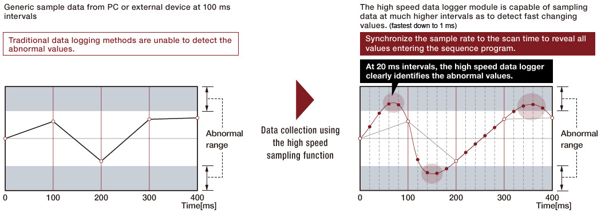
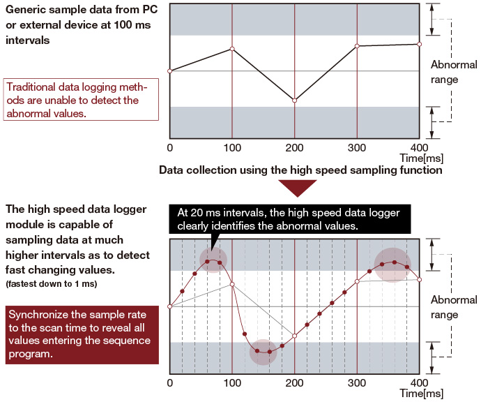
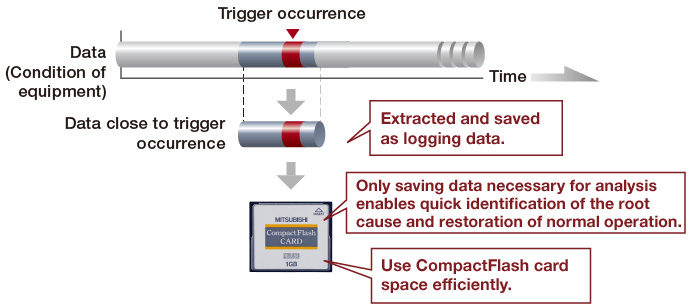
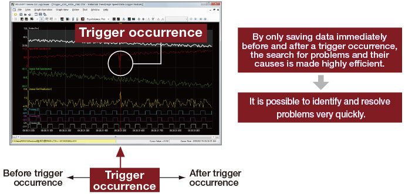
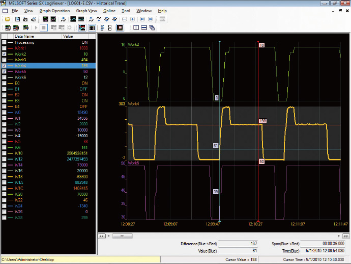
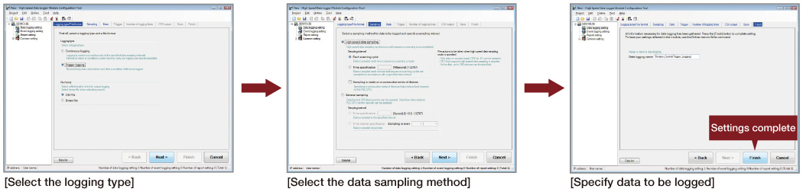
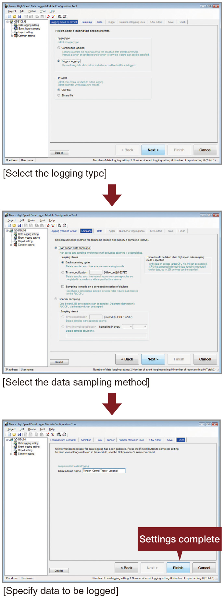
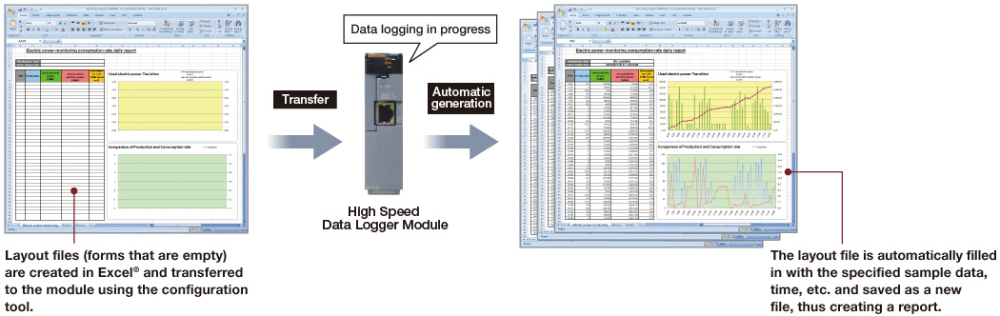
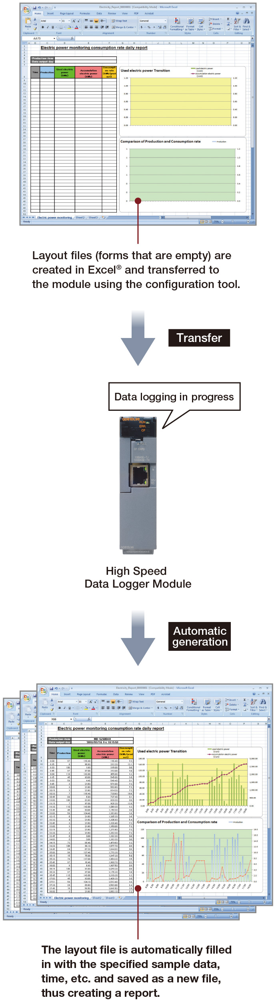

Pengendali Seri MELSEC-Q
Fitur Produk -Jaringan-

Pencatat data berkecepatan tinggi
Penuhi kebutuhan akan keterlacakan dan temukan alat pemecahan masalah yang canggih
Modul pencatat data berkecepatan tinggi
- Fungsi pengambilan sampel data berkecepatan tinggi
Fungsi pengambilan sampel data berkecepatan tinggi memiliki kekuatan untuk melakukan sinkronisasi dengan pemindaian program sekuens, memastikan bahwa setiap nilai yang tersedia untuk program dicatat untuk analisis. Dengan menggunakan metode ini, analisis operasional terperinci dan identifikasi masalah yang ada atau potensial dapat dilakukan. - Fungsi pencatatan pemicu
Pencatatan pemicu memungkinkan pengguna menentukan secara terperinci kapan data harus disimpan. Ini sangat menyederhanakan proses penyelidikan mengapa masalah terjadi dan membantu identifikasi solusi dengan cepat. Selain itu, ini memungkinkan ruang kartu memori CompactFlash digunakan secara efisien. - Alat tampilan dan analisis data pencatatan, GX LogViewer, memiliki antarmuka yang sederhana dan efektif yang dapat disesuaikan pengguna dan mencakup fitur untuk memaksimalkan efisiensi analisis data yang dikumpulkan. Alat Konfigurasi Modul Pencatat Data Berkecepatan Tinggi memungkinkan pengguna membuat aturan pengumpulan data yang canggih menggunakan proses langkah demi langkah yang intuitif. Antarmuka seperti wizard ramah bagi pemula dan mencakup fitur-fitur seperti mengimpor label global dan komentar perangkat.
- Pembuatan laporan otomatis termasuk grafik
Dengan membuat file tata letak Excel® dan mentransfernya ke modul, fungsi laporan dapat secara otomatis mengisi angka-angka menggunakan data sampel untuk membuat laporan secara berulang. Semua jenis laporan dapat dibuat yang mencakup bagan, grafik, dan alat bantu visual lainnya. Bahkan dimungkinkan untuk mengirim laporan secara otomatis melalui email.
Fungsi pengambilan sampel data berkecepatan tinggi

- Fungsi pengambilan sampel data berkecepatan tinggi hanya mendukung CPU kontrol host. (Stasiun lain di jaringan tidak didukung.)
CPU yang mendukung fungsi pengambilan sampel data berkecepatan tinggi
- QCPU model Universal berkecepatan tinggi
- Q03UDV, Q04UDV, Q06UDV, Q13UDV, Q26UDV
- QCPU model Universal
- Q03UD(E), Q04UD(E)H, Q06UD(E)H, Q10UD(E)H, Q13UD(E)H, Q20UD(E)H, Q26UD(E)H, Q50UDEH, Q100UDEH
(Kompatibel dengan modul CPU QnU yang dimulai dengan nomor seri "11012" atau lebih tinggi.)
Trigger logging function


Alat modul pencatat data berkecepatan tinggi
Alat tampilan dan analisis data: GX LogViewer

Lihat daftar peristiwa atau grafik tren [gambar kiri] baik dalam mode waktu nyata (online) maupun historis (file tersimpan). Fitur-fitur yang bermanfaat memastikan informasi penting dapat langsung terlihat.
Alat konfigurasi modul pencatat data berkecepatan tinggi
Bahkan membuat aturan pengumpulan data yang canggih pun mudah dilakukan dengan menggunakan proses konfigurasi langkah demi langkah yang intuitif.

- Alat Modul Perekam Data Kecepatan Tinggi tersedia tanpa biaya tambahan. Silakan hubungi perwakilan Mitsubishi Electric terdekat untuk keterangan lebih lanjut.
Pembuatan laporan otomatis termasuk grafik
